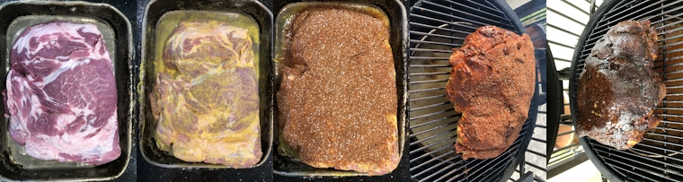

Decred月报 – 2020年4月
图片: Bridge Verticals by @saender
四月重点:
- dcrd的优化仍在继续，dcrd的速度越来越快，必须更新兼容标准以防被旧版本禁用。
- @moo31337发布了一项WIP PR，用于去中心化的开发基金支出工作。
- 非常欢迎新加入Decred GitHub的5位贡献者！
- Transak和Metal Pay进行集成DCR支付的最重要一个月。Steelbackup（金属DCR种子存储解决方案）还添加了新的预算选项。
- 线下聚会已经停止，与此同时线上聚会增长迅猛尤其是拉美地区!
开发进展总结
除非另有说明，否则此处报告的工作仅限为“合并到主核心存储库”状态。这意味着这项工作已经完成、审查并集成到高级用户可以构建和运行的源代码中，但对于普通用户来说，还不能在发布的二进制文件中使用。
dcrd:
- 更多代码从Go的标准字段类型大移，显着提高了性能
schnorr软件包：安全性测试和性能方面的改进，添加Decred中使用的基于Schnorr的自定义签名方案的综合描述文件
Schnorr签名是一种数字签名方案，以其简单性，可靠的安全性和有效的短签名生成而闻名。与ECDSA签名相比，它具有许多优势，这使其成为Decred的理想选择，唯一的缺点是，在撰写本文时，它们还没有很好地标准化。
尽管共识支持Schnorr签名，但充分利用它们的好处所需的其余基础结构尚未补足，因此它们尚未得到广泛使用。当前的工作是要对此进行补救。
与v1.5.1相比，最新版本的ECDSA和Schnorr签名验证的速度提高了约25%。
在过去的几个月中，dcrd的许多优化导致产生了一些“错误”：旧节点现在认为新版本对太多数据的请求太快而做出禁止反应。必须调整“兼容率”参数以支持新版本的速度。
dcrd存储库不再配置为btcd的fork。添加了许多新功能，并对整体进行了改进，以使它们之间几乎没有共同的代码。同样，拥有叉子的主要原因之一是能够轻松拉入上游合并。即使这样，btcd中所做的大多数更改也不再适用于dcrd。“取消分叉”还消除了有关分叉计数的困惑，其中dcrd页面显示了btcd的所有分叉数（1,500+）。现在，它显示dcrd的235个fork和btcd的1,290个。最后，在这种情况下，按“新合并请求”将针对Decred的master分支上的所有更改针对上游btcd存储库打开PR。
dcrctl控制dcrd和dcrwallet 的命令行应用程序已从dcrd分离到其自己的存储库中，以解决依赖性和维护问题。
正在开发中:
- 引入新的
addtransaction命令，对于即将到来的新VSP设计将特别有用 - bug修复和代码维护
- 出于与dcrd相同的原因，btcwallet不再是btcwallet的派生分支，截至撰写时已拥有137个自己的分支
正在开发中:
- 支持与dcrd工作相对应的钱包的去中心化开发基金支出。
- 将ProposalsList迁移到功能组件（一个较新的方法在阵营框架-它们更容易推理和检验）
- 放弃未被开采或卡住的交易
- 开始对多个组件使用pi-ui库，使Decred的不同产品具有一致的外观
- 集成CSPP
- 一种查询投票的新方法
- 将元数据从Politeia提案和CMS发票中分离出来-这是消除以前使用提案标题的简单方法，并允许添加任意元数据，包括RFP提案所需的字段
- 允许无需javascript即可查看Politeia
- 归一并添加了针对Paywall数据的缓存
- 完成状态管理系统的重构
- 大量的UI工作来支持RFP提案
- CMS中的几个UI调整
- Politeia和CMS中的多个bug修复
- 依赖项更新和bug修复
- 添加了缓存，从而改善了数据流（集线器现在将新数据推送到缓存中，而不是对其进行GUI轮询）
- 在多个位置添加了分页功能-这可以完成设计师提供的正确UI上的工作
- 可配置帐户，用于从中支付奖励
- 添加了GUI以手动请求付款并清除所有余额（离开矿池时很有用）
- 增加测试范围
@mm以英语和葡萄牙语发布了有关如何查询dcrdata以及如何运行自己的区块浏览器实例的详细指南。
- 连接到dcrd所需的设置](https://github.com/decred/tinydecred/pull/156)
- 添加了对GCS过滤器的基本支持
- 进一步提高测试覆盖率的一个无情的测试套件
- 所有测试已迁移到pytest
- 使用Cython增强了加密基元的性能，将测试执行时间从21秒减少到4秒（快速测试可实现富有成效的开发，并带来生活乐趣）
docs:
- nojs模式改进
- 交易所页面更新
其他：
4月的开发活动统计：分布在16个存储库中的313个活动PR，247个核心提交，添加3.9万行和删除2.3万行。每个存储库的贡献来自2-7个开发人员。
人员
欢迎新的首次贡献者，他的代码已合并到主代码库中： @jdambron (dcrandroid), @matthawkins90 (dcrd), @leRequinNoir (dcrdata), @kevinstl (dcrdex) 和 @chillviben (dcrios).
截至5月1日的社区统计数据：
- Twitter 粉丝: 40,570 (-124)
- Reddit 订阅: 9,761 (+1)
- Matrix 用户: 624 (+23)
- Discord 用户: 1,184 (+24)
- Telegram 用户: 2,557 (-50)
- YouTube 订阅: 3,990 (+10)
- Facebook 粉丝: 3,618 (+12), 喜欢: 3,280 (+7)
- LinkedIn 粉丝: 774 (+30)
- GitHub dcrd 星星:539 (+3), 分叉: 235 (-1,272) - 过去的fork计数包括所有btcd fork，这具有误导性，现在已删除了与btcd的fork关系，该数字现在是dcrd自己的fork
治理
3月份，社区开发基金获得了13,250 DCR，并花费了17,228 DCR。以3月份的每日 DCR/USD 汇率 $12.34计算，这是收到的$164K和花费的$213K。以2月份的每日平均价格$13.40计算，该月完成工作的美元费用为$231K。截至4月3日，库存余额为636,000 DCR（917万美元，折合14.42美元）。
四月份提交了两个新提案，一个提案广告牌营销活动被拒绝，批准率为17％（参投票为31％），另一个针对内容营销活动的CryptoNoticias提案也被拒绝，批准率为31％，参投票为30％。
3月发起，本月投票的两项提案也被拒绝。DCR Comic 2获得了49.4％的投票支持（19％的参投），而Decred Daily提案获得了17％的参投率的44％的支持。两者均未达到20％的法定人数。
有关这些提案的更多详细信息，请参见《Politeia Digest》第30期。
网络
全网算力:4月份的算力以〜302 Ph/s 的速度开始，以〜360 Ph/s的速度结束，最低为240 Ph/s，并在整个月达到峰值470 Ph/s。截至5月1日的池哈希率分布：UUPool 46％，Poolin 22％，lab.antpool.com 17％，F2Pool 2％，Luxor 2％，BTC.com 1.6％，BeePool 0.12％，CoinMine 0.05％，Suprnova 0.02％和其他〜9％。池分配数是近似值，无法准确确定。
Staking: 30天的平均票价为137.8 DCR（-4.1）。该价格 131.7-142.8 DCR之间变化。锁定金额为562-571万DCR，相当于参与 PoS 的可用供应量的49.2-50.3％。
节点: 整个四月，每个dcr.farm平均有131个公共监听节点，总共206个节点。4月的平均版本分布：44％dcrd v1.5.1、16％dcrd v1.5、6％dcrd v1.6开发人员版本，5％dcrd v1.5开发人员和RC版本，4％dcrd v1.4、9％dcrwallet v1.5.1、2.4％dcrwallet v1.4、1.4％dcrwallet v1.5。
来自@Checkmate的更新：
- Our Network新闻稿(tweet)的Decred部分。基于@Checkmate的库存到流量模型，PoW矿工收入和 @permabullnino的票务数据研究的多个指标表明该网络被低估了。
- 相对于网络评估，NVT和RVT指标而言，链上交易量很大。
- 由于增加了隐私使用量，因此增加了交易量。
整合
dcr.blueVSP宣布将于4月20日关闭，已经通过邮件通知注册用户。它已从列表和Decrediton中删除，但在2020年剩余时间内将保持在线状态。大约4.7个月，这使用户大约有3个月的时间停止购买分配给DCR.Blue的选票。建议用户备份尚未兑换的脚本（VSP帐户中有副本），然后开始购买其他VSP的选票。请避免加入太大的VSP，以保持健康和更好的网络安全性。这是第一个尝试“正常关闭”的VSP，而不是像其他一些VSP过去所做的那样在没有通知的情况下消失了。
在三月份退市的decred.raqamiya.net VSP 现在 可以再次使用，并重新添加到列表中。截至撰写本文时，它拥有约330张选票（0.8％），具有4台服务器并具有自定义UI。
Metal Pay 在其市场上增加了 对DCR的支持。它提供了另一个法定通道，并且在美国大多数州都可以使用。他们在公告之后发表了有关Decred的推文。
Transak 宣布可在其法定加密支付网关上对欧元，英镑和印度卢比进行DCR交易。美元对即将推出。
物理种子备份解决方案Steelbackup添加了该产品的简化版本。当前，有两种类型的钢板：激光雕刻和激光标记。雕刻是最坚固的解决方案，因为去除了钢，使标记网格与钢一样永久。激光打标的产品用二硫化钼溶液打标，使其耐刮擦，耐酸和耐高温（最高340摄氏度）。产品设计简单，没有活动部件，用户只需要一个中心冲头（可在当地五金店找到）来压入种子。包括防篡改袋。SteelBackup由@zubair于2020年2月推出，并在全球范围内发售。
警告：Decred Journal的作者不了解上述任何服务的可信赖性。在将您的个人信息或资产信任给任何实体之前，请先进行自己的研究。
外展活动
Decred的YouTube频道增加了4个新视频，而Decred in Depth和Rough Consensus播客总共发布了3集（请参阅下面媒体）。
Decred巴西频道持续积极地制作内容。Decred Semanal（“ Decred Weekly”）在4月份发布了5个新剧集，平均获得了约150次观看，而前几个月的观看次数为50次（可能是由于改进了分发策略）。该系列还可以在所有主要平台（如Apple（共59集），Google，Spotify，SoundCloud等）上以播客格式使用。
在Medium上，Decred Drive继续提供不错的每周更新，Decred Spanish正在添加新文章和翻译，Phoenix Green出现了有关他的加密货币/ Decred旅程的著作。
@ jy-p在8btc.com的项目调查中评论了法定货币发行和远程工作。8btc是中国最早的比特币论坛。
Monde PR四月份成就：
- 创建并提出了一个针对投资，风险投资和技术出版物的故事创意
- 创建并提出了针对加密货币和金融科技出版物的故事创意
- 创建并提出了针对个人理财出版物的故事创意
- 提交Decred发言人对8个新闻故事的评论
- 通过主流新闻专线进行媒体采访，并通过主流和加密出版物获得3封电子邮件问答
Monde PR保证的新闻报道：
- @richardred在ValueWalk中进行思想领导的文章
- Cointelegraph上的一篇文章，收录了Investing.com和比特币新闻网发布的@ jy-p关于稳定币未来的评论
活动
参加：
- 4月4日 - Paxful Conversations - 互联网。Paelful LATAM邀请@elian讨论在研究加密货币基础知识时如何发现骗局以及如何看待。这不是直接的Decred演讲，但被提及为行业内良好实践的一个例子。该网络研讨会由“ Decred提供支持”，约有70人观看。
- 4月9日 - Hablemos Decred 03 - 互联网。@pablito和@elian解释了PoS系统。这次只有3名新观众，尽管从推广活动和选择最佳时间方面获得了一些经验教训。(报告)
- 4月16日 - Jalisco Talend Land @ Home - 互联网。Decred团队介绍了一个题为“金钱与远程工作的未来”的小组，通过4位Decred承包商在拉美的经验和经验，探讨了金钱，技术和远程工作的交集。他们分享了他们在阿根廷，哥伦比亚和墨西哥工作的经验，并介绍了为Decred远程工作的挑战和机遇。(报告)
- 4月16日 - Hablemos de Criptomonedas - 互联网。该网络研讨会通过其创新中心IDIT与Ibero University共同举办。@adcade和@elian与22位观众（共34个注册）讨论了加密货币和区块链，其中大多数是学生。(报告)
- 4月23日 - Hablemos Decred 04 - 互联网。@pablito和@elian专注于交流和Decred正在建立的DEX。这次参加人数最多为15人，并且LATAM团队正在继续探索举办此类活动的最佳方法。(报告)
- 4月30日 - Decred Virtual Meetup - 互联网。@Checkmate介绍了他的BTC和DCR链分析。录音已上传到YouTube。
即将到来的:
- 5月12日 - Decred Foundations at Consensus Distributed（需要在brella.io进行注册才能查看和“出席”）- 互联网。共识分发是年度共识会议的远程替代，Decred是受邀贡献一个小时内容的项目之一，分为三个部分。在Construct中，@ richardred与一些重要的Decred子项目的参与者进行签到，以了解它们的含义以及最新的内容。在Politeia上具有@lukebp，在dcrlnd上具有@matheusd，在dcrdex，dcrdata和TinyDecred上具有@chappjc和@ buck54321。第二部分是商业机密，其中@Checkmate将快速介绍他的前5个Decred链上指标。最后，@ jy-p将在ChangeLog中介绍该项目所有主要方面的年度进展回顾，然后与Lucas Nuzzi进行10分钟的现场问答。
- 5月14日 - Virtual meetup with BlockchainEx - 互联网。Decred将参加“什么是分散式治理和DAO？”小组。由Decred的@adcade和@ caibarrad，MakerDAO的Nadia Alvarez，Colony的Gustavo Segovia和BlockchainEx的Jhonny Gomez共同主持。该小组将直播到哥伦比亚的区块链社区。
- 5月14日 - Decred meetup with BlockConf - Internet。这将是一次虚拟聚会，以展示平台并在主要会议之前进行炉边聊天。该团队将简要介绍Decred的基础知识和正在开发的新发展。
- 5月25日 - BlockConf - 互联网。Decred是铜牌赞助商。Decred LATAM团队将为Decred运行一个虚拟展位，以回答与会者的问题。如果有人希望在48小时活动中在多个时区保持摊位处于活动状态，请联系@elian。
图片: No shortage of Stakey in LATAM
媒体
精选文章：
- Decred 链上：@PermabullNino (medium)
- Decred 做市商第一阶段总结 @richardred (blockcommons.red)
- 我们网络的问题 #15 ：@Checkmate (substack.com)
- Decred 提案治理：Phoenix Green (medium)
- 金融2.0：Phoenix Green (medium)
- 开源金融思维方式：”Phoenix Green (medium)
- 每个人都应该了解的有关加密货币的三件事：Phoenix Green (medium)
- 比较比特币和Decred：Phoenix Green (medium)
- 如果比特币有开发基金怎么办？：Ryan Watkins (messari.io)
- The Capital的Decred采访 (前Altcoin杂志, medium)
- 让我们谈论Decred和远程工作： @adcade (西班牙语, medium)
- Decred虚拟会议 (西班牙语, es.cointelegraph.com)
翻译:
- 在DAO中工作的真正含义 - 葡萄牙语 @mm.
- 2020年3月的Decred月报被翻译成阿拉伯语（@arij），中文（@Dominic），波兰语（@kozel）和西班牙语（@francov_）。自12月以来，@kozel再次加入队伍，并翻译了4期。缩短的西班牙语版本在Medium展示。谢谢大家对月报项目的支持！
视频:
- DCR 101 - @Exitus为decred DAO工作(youtube)
- Decred双周报 - 4月18日@Exitus(youtube)
- Decred Australia virtual meetup - @Checkmate(youtube)进行了BTC和DCR链上分析活动
- 用美联储自己的话来说。保护您的财富，购买去中心化的信用(twitter)
- DCR 101-如何购买选票 @Exitus(youtube)
- Decred价格分析 - 4月17日 - Brave New Coin (youtube)
音频:
- Rough Consensus Ep. 4 - 黄金，比特币和Decred。@ mr.black，@ Checkmate和@PermabullNino在经济崩溃和量化宽松的背景下讨论了宏观和加密市场的状况。对话中考虑了有形货币的性质以及金，比特币和Decred如何代表有形货币频谱的不同区域。（libsyn） (libsyn)
- Decred in Depth - @mr.black, @Checkmate 和 @PermabullNino. (libsyn, youtube, soundcloud)
- Decred in Depth - Placeholder的VC Chris Burniske谈论了最近的发展，为何使用Decred HAS（超安全适应性可持续发展），dcrdex的机会以及Politeia扩展Decred生态系统的方法等等！ (libsyn, youtube, soundcloud)
社区讨论
精选Reddit帖子：
- Decred月报自己的Reddit帖子是本月subreddit上讨论最多的帖子，有42条评论！
- 对@bee 将投票原因信息添加到Politeia投票的想法的讨论得出的结论是，正确实施它需要像盲目投票方案这样的隐私解决方案。
- 第一阶段做市报告的讨论推测了采用率。
- Decred: Do Different做不同的试验。
- 这个帖子@Checkmate讨论和比较了Decred和其它链的攻击成本
精选Twitter讨论：
- @Checkmate 发文 称，单小时双花攻击DCR的成本是BTC的54倍，这引起了很多讨论。
- @Checkmate 宣布了一个新项目的启动，一个团队的成员正在一个新的Decred链上指标网站上工作。
- @moo31337在推特上发布了关于在分散的国库支出提案上进行工作的WIP PR，但其中一半以上的评论确实与他的下一次烹饪冒险有关。

市场
4月DCR交易价格在11.08-15.01美元 / BTC 0.00151-0.00179之间。每日平均价格为$12.34。
@richardred撰写了一份有关做市商在其第一个提案期限内的表现的报告。
相关外部信息
发生了另一次 DeFi攻击，尽管这次dForce从攻击者那里收回了损失的大部分2500万美元，并且用户得到了补偿。
在更模糊的稳定币网络PegNet上，流氓矿工通过操纵价格甲骨文以51％的攻击方式，将11美元的pJYP余额变成了670万pUSD余额。攻击者无法清算超过一小部分的pUSD，随后伸出援手说，他们只是试图对网络进行笔测试，并烧掉了神奇创建的pUSD。
人们想知道为什么ProgPoW会重新回到以太坊核心开发者的议程上，以及是否无法摆脱它意味着在以太坊的治理中有些烂透了。
迄今为止，美国政府为小企业提供的3490亿美元贷款计划已为银行产生了100亿美元的费用，每笔贷款的处理费用为1-5％，尽管向银行提供的贷款风险很小，因为它们实际上只是通过了银行由小企业管理局（Small Business Administration）担保所有贷款。（纯文本版本）
Maker Foundation受到在黑色星期四亏损的投资者的诉讼。
已经有一个整体攻势对加密的交流和令牌发行商提起集体诉讼的。
根据glassnode的警报，4月23日，交易所持有的USDT余额达到了18亿美元的新ATH 。
YouTube已经更新了其政策，以禁止任何违反“权威消息来源”（例如世界卫生组织指南）的COVID-19内容，正如YouTube首席执行官在接受采访时透露的那样。YouTube审查某些主题的视频并不是什么新鲜事，但要根据“权威来源”的说法灵活地决定这些决定，并故意将流量吸引到这些来源，这是新鲜事。
在有关将.org域名出售给私募股权公司的报道的更新中，ICANN 投票决定拒绝出售，从而有效地阻止了出售。
关于月报
这是Decred Journal的第25期。有关所有问题，镜像和翻译的索引，请参见此处。
在经过最少的健全性检查之后，来自第三方的大多数信息都会直接从来源中继。Decred Journal的作者无权验证所有声明。请当心诈骗，并自行进行调查。
感谢 (字母排列):
- 写作和编辑: bee, degeri, elian, Exitus, l1ndseymm, pablito, richardred, s_ben, zubair
- 评论和反馈: chappjc, davecgh, emiliomann, jholdstock, jrick, lukebp
- 封面图片: saender
中文社区
欢迎同时关注英文月报了解更多最新消息